2FA inloggen FinConnect
In dit artikel leggen we uit hoe de 2FA standaard werkt bij FinConnect en hoe authenticatie via een app ingesteld kan worden en hoe dit werkt voor een gebruiker. Een i-frame formulier kan beveiligd worden met 2FA.
Basis functionaliteit:
Om in te loggen op FinConnect is 2FA ingeschakeld. De standaard functionaliteit is dat de 2FA code via de mail wordt verstuurd. Hiervoor is geen extra module nodig.
Zie de handleiding over inloggen op FinConnect.
Module 1 - 2FA Verplicht:
Staat de module 2FA Verplicht aan, dan wordt er altijd een mail met code gestuurd en is het niet mogelijk om zonder 2FA in te loggen. Zelfs als bij een gebruiker dit door een administrator uitgezet zou zijn.
De gebruiker kan wel zelf kiezen om via zijn profiel het inloggen via de authenticator app in te stellen.
Module 2 - 2FA verplicht via authenticator-app:
Met de module 2FA verplicht via authenticator-app kan in FinConnect geregeld worden dat het inloggen op FinConnect met een authenticator-app gebeurt, in plaats van een e-mail met een code.
Uiteraard moet de gebruiker in het bezit zijn van een smartphone, waarop een authenticator app geïnstalleerd is of kan worden.
Er wordt geen code meer gemaild, er moet via de authenticator app ingelogd worden.
Module 2FA Verplicht, maar authenticator-app niet verplicht:
In dit geval kan de ingelogde gebruiker er zelf voor kiezen om wel 2FA via de authenticator app te activeren.
Stappen:
De gebruiker logt in op FinConnect en gaat naar zijn profiel.
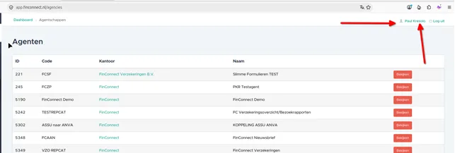
Als zijn profiel is geopend, kan onderin gekozen worden om de Authenticator app in te stellen.
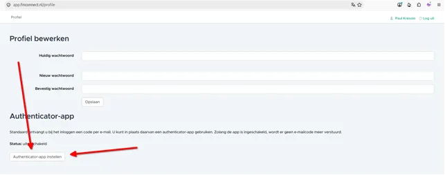
Er wordt gevraagd om het wachtwoord in te geven.
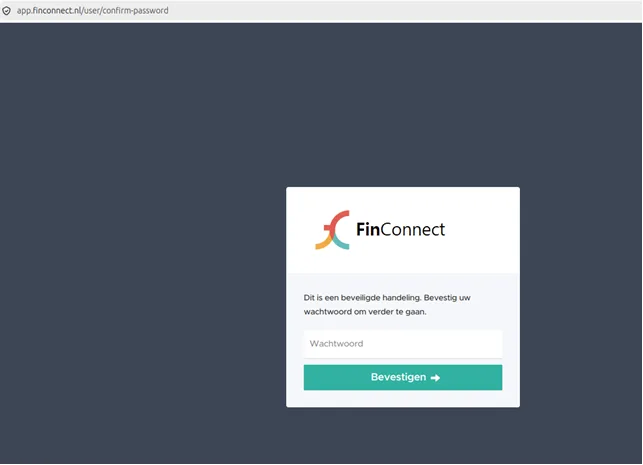
Vervolgens wordt de pagina getoond om via de app op de mobiele telefoon een QR code te scannen.
Het account wordt toegevoegd aan de authenticator app op de telefoon.
Deze geeft een code en die kan hier ingevuld worden.
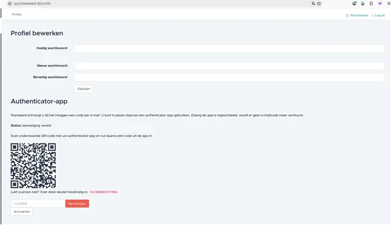
Is de code correct ingevuld en opgeslagen, dan worden de herstelcodes getoond. Bewaar deze op een plek buiten FinConnect. Hiermee kan in het geval als iemand bijv. telefoon kwijt is, zijn authenticatie herstellen.
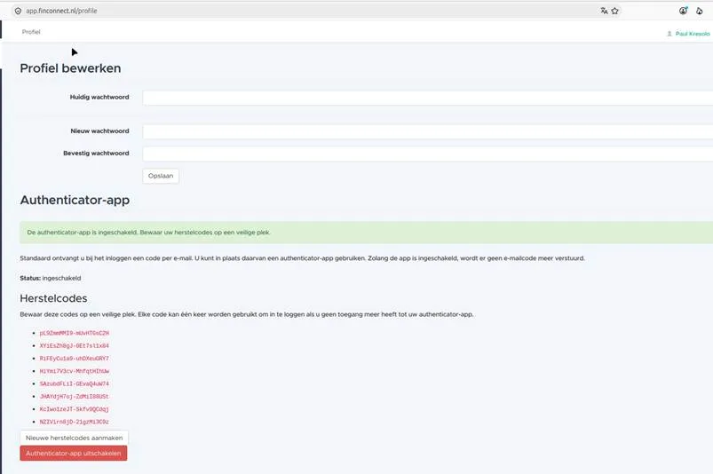
De gebruiker kan deze pagina verlaten en de 2FA via de authenticator app is ingesteld.
2FA uitschakelen:
Dit kan de ingelogde gebruiker doen bij zijn profiel in FinConnect.
Dit is alleen mogelijk, als er geen module aan staat die 2FA via authenticator app verplicht maakt.
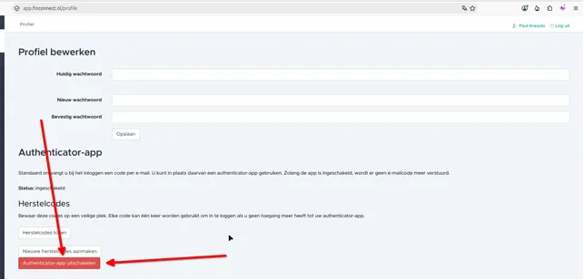
Gebruiker is verplicht om 2FA via authenticator-app in te schakelen:
Als de Module 2: 2FA verplicht via authenticator-app op Agentniveau AAN gezet wordt krijgt een gebruiker eerst het bestaande inlogscherm waarin gevraagd wordt de code uit de e-mail in te vullen om in te loggen.
Na het invullen van de juiste code verschijnt het scherm om de 2FA in te stellen.
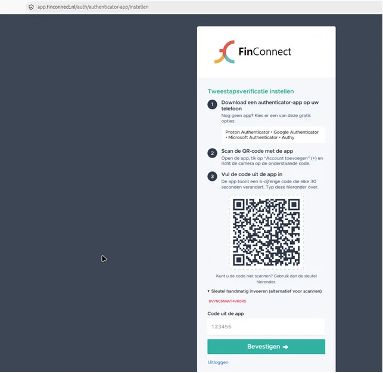
Na het activeren van de app met de QR code en het invullen van de juiste code, worden de herstelcodes getoond. Bewaar deze codes buiten FinConnect op een veilige plek.
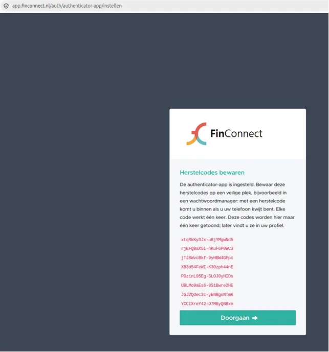
Bij het profiel van de gebruiker in FinConnect is te zien dat de 2FA via de authenticator app actief is. Ook kunnen hier de herstelcodes getoond worden of nieuwe codes worden aangemaakt.
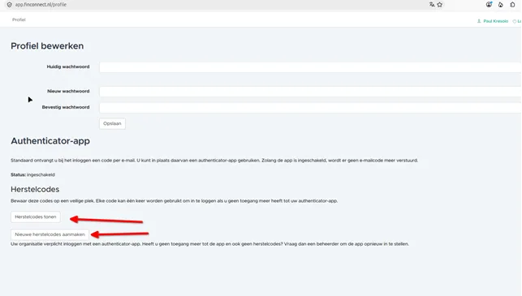
Als de 2FA via de app is ingeregeld, ziet het inlogscherm er voortaan zo uit, na het ingeven van het wachtwoord.
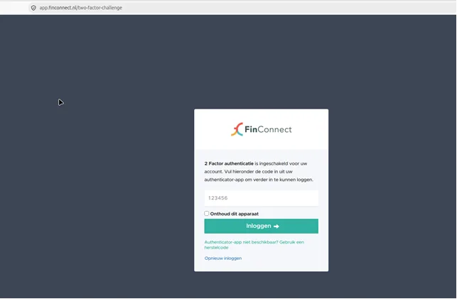
Module 3 i-Frame formulieren afgeschermd door 2FA
Volgende instellingen moeten ingeregeld zijn:
Op kantoorniveau en agentniveau moeten deze modules aan staan:
Module: 2FA verplicht via authenticator-app
Module: I-frameformulieren achter authenticator
In een formulier de volgende optie op JA zetten ‘Vereist inloggen met authenticator-app’
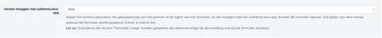
Alleen FinConnect-gebruikers die gekoppeld zijn aan het kantoor of de agent van het formulier, en die inloggen met een authenticator-app, kunnen dit formulier openen. Dat geldt voor elke manier waarop het formulier wordt geopend: iframe, e-mail en link.
Let op: formulieren die via een "Formulier vraag" worden geopend, zijn alleen beveiligd als die instelling ook bij dat formulier aanstaat.
Samenvatting:
Module 1 2FA Verplicht van toepassing – alles als voorheen voor bestaande gebruikers, maar bestaande gebruikers kunnen wel als zij dat willen 2FA via de app inschakelen.
Module 2 van toepassing op Kantoorniveau – voor ALLE onderliggende agenten geldt het volgende, een gebruiker zal bij een volgende inlogpoging gevraagd worden om 2FA-app te activeren.
Module 2 van toepassing op Agentniveau - een gebruiker zal bij een volgende inlogpoging gevraagd worden om 2FA-app te activeren.
Module 3 van toepassing in combinatie met Module 2 of 3 – een gebruiker kan een formulier met de optie in het formulier ‘Vereist inloggen met authenticator-app = Ja’ normaal gebruiken /openen.
De gebruiker dient dus voor te komen in FinConnect.
Voor ieder ander is dit formulier niet toegankelijk.
Veelgestelde vragen
Waarom vraagt het systeem dit?
Vanaf nu beveiligen wij uw account met tweestapsvericatie. Dat betekent dat u bij het inloggen twee dingen nodig heeft:
1. Uw wachtwoord — iets dat u weet;
2. Een code uit een app op uw telefoon — iets dat u bij u heeft.
Zelfs als iemand uw wachtwoord achterhaalt, kan die persoon toch niet inloggen zonder uw telefoon. Dit is momenteel een van de veiligste manieren om accounts te beschermen, en vrijwel alle grote diensten (banken, e-mail, overheid) gebruiken deze methode. De code via de app is nog veiliger dan de code via de mail voorheen, omdat de mail onderschept zou kunnen worden.
Wat is een authenticator-app?
Een authenticator-app is een gratis app op uw smartphone die om de 30 seconden een nieuwe zescijferige code laat zien. Deze code hoort alleen bij uw account en is telkens maar kort geldig. Belangrijk om te weten:
• De app heeft geen internetverbinding nodig om codes te tonen;
• De code staat alleen op uw telefoon en wordt nergens verstuurd;
• Eén app kunt u voor meerdere accounts en diensten gebruiken.
Welke authenticator apps worden ondersteund?
Kies één van de gratis apps in de App store (iPhone) of Play Store (Android):
App | Geschikt voor |
Proton authenticator | iPhone en Android |
Google authenticator | iPhone en Android |
Microsoft authenticator | iPhone en Android |
Authy | iPhone en Android |
Moet ik internet hebben om de code te zien?
Nee. De codes worden op uw toestel berekend, zonder verbinding. Alleen het inloggen zelf vereist internet.
Waarom verandert de code steeds?
Dat is de beveiliging: een code is maar kort geldig. Daardoor heeft een afgevangen code vrijwel geen waarde meer.
De code wordt afgekeurd, wat nu?
Controleer of de klok van uw telefoon op "automatisch" staat. Staat de tijd verkeerd, dan lopen de codes uit de pas. Wacht anders op een nieuwe code en probeer opnieuw.
Ik ben mijn telefoon kwijt. Wat moet ik doen?
Neem zo snel mogelijk contact op met de beheerder. Die kan de verificatie terugzetten zodat u opnieuw kunt beginnen. Heeft u de herstelcodes bewaard, dan kunt u dit ook zelf.
Ik krijg een nieuwe telefoon. Kan ik de app meenemen?
Ja, meestal wel. Veel apps hebben een export- of overdrachtsfunctie (bij Google Authenticator: "Accounts overzetten"). Doe dit vóórdat u de oude telefoon inlevert of wegdoet. Lukt het niet, dan zet de beheerder de verificatie even terug.
Werkt dit ook op een tablet of zonder smartphone?
Een tablet met authenticator-app kan in principe ook. Heeft u helemaal geen geschikt apparaat, neem dan contact op met de beheerder voor een alternatief.
Kan ik dit weer uitzetten?
Tweestapsverificatie beschermt uw account en gegevens aanzienlijk. Om die reden kan het alleen door de beheerder worden uitgeschakeld. Uitsluitend de gebruikers, waar de module 2FA authenticator app niet verplicht is, kunnen de app weer uitzetten bij hun profiel in FinConnect.
Is een authenticator-app hetzelfde als een wachtwoordmanager?
Nee. Een wachtwoordmanager bewaart uw wachtwoorden; een authenticator-app maakt de tijdelijke inlogcodes. Veel mensen gebruiken beide naast elkaar.
Bron: helpcenter FinConnect